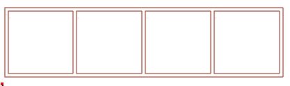
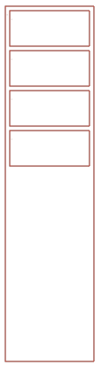
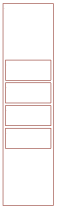
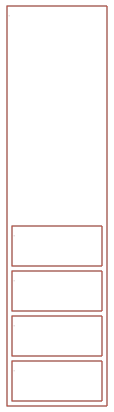
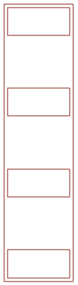

Basic UI layout¶
There's a basic layout engine for UI that is currently code only, but will be able to be used from assets over time.
The examples at the end have images to show how the options work.
Getting started¶
The first important step for layout is enabling it on a given UI canvas. We'll import the layout mode enum for the UI, as well as the ones for layout.
import "luxe: ui" for UILayoutMode, UIBehave, UIContain
Then we tell the UI we have to use UILayoutMode.flex via UI.set_layout_mode.
var ui = Entity.create(app.world, "ui")
UI.create(ui, x, y, w, h, depth, app.camera)
//now tell it to use flex layout mode
UI.set_layout_mode(ui, UILayoutMode.flex)
Don't forget to commit changes which will update layout when you make changes to the UI!
UI.commit(ui)
The API¶
There's only 3 methods needed for the layout engine.
Control.set_behave(control: Control, behave: UIBehave)
Control.set_contain(control: Control, contain: UIContain)
Control.set_margin(control: Control, left: Num, top: Num, right: Num, bottom: Num)
The concepts¶
The margins are just margins, they're relative to other controls.
The first key concept is contain: as a container, how does my contents behave.
The second is behave: as a child, how do I behave.
We'll start by looking at how contain works, which has two main approaches of laying out the contents of a container.
Set a size to zero if you want it to be filled in by the layout engine. If you specify a fixed size it will try to respect it.
Contain¶
free layout¶
The first type is called UIContain.layout which is free layout. A child can set their margins to control their relative position, it won't be affected by other controls.
To use this, you'd set Control.set_contain(container, UIContain.layout) on the container.
flex layout¶
The second kind is UIContain.flex, the one you typically use a dynamic layout for: flexible automatic layout.
row/column¶
To use this, you start by choosing a type of layout (row/column).
These are UIContain.row and UIContain.column.
With row, contents of the container will be placed side by side.
With column, they'll be stacked vertically.
optional flex
Technically UIContain.flex exists, which defaults to row, but you can leave out the flex when specifying flex options since it's implied.
fit contents¶
Sometimes we want a container to be the size of the children. This will ordinarily happen automatically if you don't set a fixed size for the container, but you can also use UIContain.vfit and UIContain.hfit to force the behaviour and ignore the container size.
Note that children relying on the container size (like vfill) while the container expecting a size from the children (vfit) may behave in an unclear way, since it's somewhat impractical. Make sure somewhere a size is specified so it can resolve what you really mean. Better errors around this are planned.
alignment¶
Now that we have our contents arranged side by side or vertically, we can decide how they'll be aligned. We do this with UIContain.start, UIContain.middle, UIContain.end and UIContain.justify.
start will align left (row) or top (column).
end is right (row) or bottom (column).
middle will align them in the center either way.
justify will insert spacing to stretch across whole area, spacing them out evenly.
wrapping¶
Finally, we have UIContain.wrap/UIContain.nowrap. nowrap means single line, and won't wrap if the container gets too small. wrap would rearrange contents making it multi-line if that happened.
Behave¶
The next set of options available come from UIBehave, which decide how a control will behave when inside a container. The container decides how things will be arranged in relation to each other, but a container has options on how it will act as well.
Behaviour is also relative to the contain of the parent. Some options won't make sense if the parent is in flex mode, but all options are valid for layout mode.
The options are listed below. Some options are a shorthand for multiple options, such as UIBehave.left | UIBehave.right | UIBehave.top | UIBehave.bottom meaning the same as UIBehave.fill. You'll also notice that margins are used in relation here as well.
fill- anchor to all four directionsleft- anchor to left item or left side of parenttop- anchor to top item or top side of parentright- anchor to right item or right side of parentbottom- anchor to bottom item or bottom side of parenthfill- anchor to both left and right item or parent bordersvfill- anchor to both top and bottom item or parent bordershcenter- center horizontally, with left margin as offsetvcenter- center vertically, with top margin as offsetcenter- center in both directions, with left/top margin as offset
Examples¶
It may be easier to see examples to make sense of these options! Don't forget to commit changes to the ui itself and changes to the layout. The first example will have all the setup code, subsequent ones will just show relevant bits.
There's also the samples/wip/ui sample, which has been updated to use the layout API.
A row of controls¶

var ui = Entity.create(app.world, "ui")
UI.create(ui, 0, 0, app.width, app.height, 0, app.camera)
//First we create a container
var container = Control.create(ui)
Control.set_bounds(container, 20, 20, 400, 100)
//Then we want children to be in a row, and spaced evenly
Control.set_contain(ui, container, UIContain.row | UIContain.justify)
//We are relative to the canvas, so anchor left...
Control.set_behave(ui, container, UIBehave.left)
//And set a margin of 8 units away from the side
Control.set_margin(ui, container, 8, 0, 0, 0)
//Now we'll make a few controls to put inside
for(i in 0 ... 4) {
//This is for the margin, we only want
//a left margin on the first one.
var left = 0
if(i == 0) left = 5
var block = Control.create(ui)
// Notice that we don't set the size of the control,
// because the layout will do that for us by definition.
// We set our behaviour to fill, both vertically and horizontally.
Control.set_behave(ui, block, UIBehave.fill)
//We add margins so we're not touching the edges
Control.set_margin(ui, block, left, 5, 5, 5)
//And add it to the control
Control.child_add(container, block)
}
//Commit changes
UI.commit(ui)
A stack of controls¶
Let's rearrange these verticallly, and make them fixed height.
We can still specify sizes of our controls if the layout settings don't override it.
(We can set a size to 0 too which signals that the layout will control it).
The container changes, note that we've removed justify and made it start so they'll be aligned
to the top of the container. The 4 images below are start, middle, end and justify respectively.
Control.set_contain(ui, container,
UIContain.column | UIContain.start)
   
And then the blocks, we set them to horizontal fill, so they'll expand all available space on x. We don't set any vertical layout options, so we set the size vertically to a fixed size.
for(i in 0 ... 4) {
var block = Control.create(ui)
var top = 0
if(i == 0) top = 5
Control.set_size(block, 0, 40)
Control.set_behave(ui, block, UIBehave.hfill)
Control.set_margin(ui, block, 5, top, 5, 5)
Control.child_add(container, block)
}